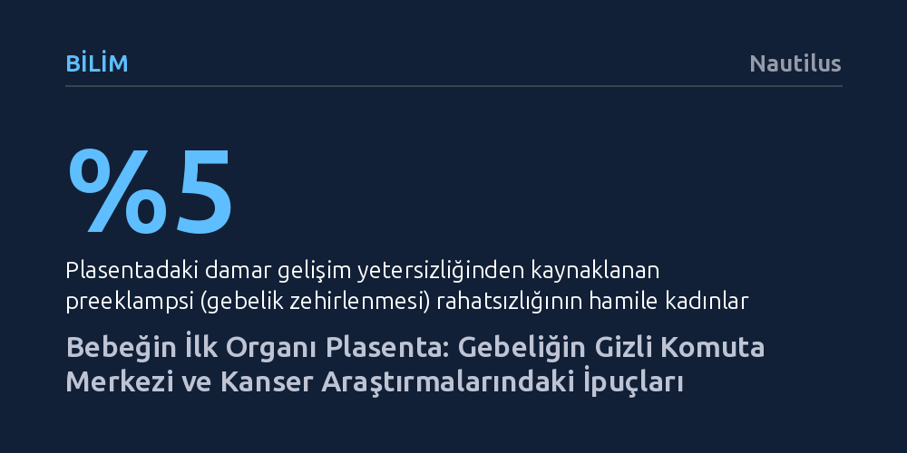

BILIM · Nautilus · 2026-10-11
Bebeğin ilk gelişen organı olan plasenta; yalnızca fetüsün hayati organlarının işlevini üstlenmekle kalmıyor, salgıladığı hormonlarla annenin beynini yeniden yapılandırıyor. Ayrıca bağışıklığı atlatıp dokuları istila edebilme yeteneğiyle kanser araştırmalarına da kritik ipuçları sunuyor.
Doğumdan sonra biyolojik atık sayılan plasentanın pasif bir bağ değil, bebeğin ilk organı, gebeliğin komuta merkezi ve kanser biyolojisini aydınlatabilecek bir kılavuz olduğunu gösteriyor.

Tarih boyunca plasentaya yüklenen anlamlar büyük bir dönüşüm geçirdi. Antik Roma ve Grek mutfağında yassı bir tatlıyı anlatan adından, bebeği koruyan kutsal bir bağ kabul edilip doğum sonrası gömüldüğü geleneksel ritüellere kadar pek çok kültürde bu organa derin bir saygı atfedildi. Örneğin Güneydoğu Asya'daki Hmong topluluğu, ölüm anında ruhun plasentayla yeniden buluşup öte dünyaya göç ettiğine inanarak bu organı bugün dahi evlerinin altına gömmeyi sürdürüyor. Buna karşın modern toplumlar plasentayı genellikle doğum biter bitmez imha edilen sıradan bir biyolojik atık olarak değerlendirdi.
Oysa laboratuvar masasına taşınan güncel biyolojik veriler bambaşka bir gerçekliğe işaret ediyor. Yaygın tıbbi kanının aksine, bir bebeğin vücudunda ilk gelişen organ kalp ya da beyin değil; döllenmeden yalnızca 6 ila 10 gün sonra oluşmaya başlayan plasentadır. Hücrelerinin neredeyse tamamı bebeğin DNA'sını taşıyan, dolayısıyla genetik kökeni anneye değil fetüse ait olan bu yapı, gebeliğin 12. haftasında tam kapasiteyle faaliyete geçer. Fetal kalp üçüncü haftadan itibaren kanı pompalamayı sürdürse de bebek henüz kendi organlarını çalıştıramazken akciğer, sindirim sistemi, karaciğer ve böbreklerin üstleneceği tüm yaşamsal takasları plasenta tek başına yönetir.
Plasenta, anne ile bebek arasında neyin geçip neyin geçemeyeceğine karar veren pasif bir süzgeç ya da kapı görevlisi değildir; aksine dolaşım sistemleri arasındaki madde alışverişini anlık ihtiyaçlara göre dönüştüren son derece gelişmiş bir biyolojik arayüzdür. Annenin kanından oksijen ve besinleri çekip fetüsün kullanabileceği forma sokar, karbondioksit ve hücresel atıkları ise annenin akciğerleri ile böbreklerine geri aktarır. Ancak bu çift yönlü köprünün inşasındaki aksaklıklar, gebelik döneminin en tehlikeli klinik tablolarına zemin hazırlar.
Bu sorunların başında, hamile kadınların yaklaşık yüzde 5'ini etkileyen preeklampsi (gebelik zehirlenmesi) gelir. Anne ve fetüsteki genetik, bağışıklık ve damarsal etkenlerin birleşimi, plasentanın annenin dolaşım sistemine bağlanan damarları yeterince genişletme kabiliyetini sekteye uğratabilir. Başlangıçta fetüs küçükken az kan akışı fark edilmez; fakat bebek büyüyüp oksijen ve besin talebi katlandığında, plasenta anne vücuduna daha fazla kan göndermesi için ısrarla sinyal yollar. Damarlar dar kaldığı için bu talep karşılanamaz ve plasentanın artan uyarıları bir kısır döngü yaratarak annede yüksek tansiyon, idrarda protein kaçağı ve ağır vakalarda çoklu organ hasarına yol açar.
Plasentanın incelenmesi, yalnızca gebelik patolojilerini aydınlatmakla kalmayıp tıp dünyasının en büyük bilmecelerinden biri olan kanser hücrelerinin çoğalma ve yayılma dinamiklerine dair de çarpıcı veriler sunuyor. Kanser hücreleri hızla bölünür, sağlıklı dokuları istila eder, kendilerini beslemek için yeni damarlar örer ve bağışıklık sisteminin savunucularından ustalıkla kaçar. İlginç biçimde plasenta hücreleri de rahmin iç tabakasına tutunurken ve bebeğe kan taşımak üzere yeni damar ağları kurarken tıpatıp aynı hücresel stratejileri devreye sokar.
Bilim dünyasında büyük yankı uyandıran bu benzerliğe rağmen plasenta hücreleri kesinlikle kanserli değildir. Kanser hücreleri organizmaya zarar veren denetimsiz bir yıkım sergilerken, plasenta hücreleri tam aksine fetüsün hayatta kalabilmesi için son derece hassas, koordineli ve programlanmış bir sınır içinde hareket eder. İşte bu kontrollü istila kabiliyeti, araştırmacıların kanser biyolojisini çözmek ve tümörlerin bağışıklıktan kaçışını durduracak yeni tedavi protokolleri geliştirmek adına plasentayı eşsiz bir model olarak kullanmasını sağlamaktadır.
Plasentanın bir diğer kritik yönü, gebeliği baştan sona yöneten bir endokrin komuta merkezi gibi çalışmasıdır. Döllenmenin hemen ardından salgıladığı hCG hormonu sayesinde sarı cismin (korpus luteum) erimesini ve âdet görmeyi engeller, böylece rahmin embriyoyu kabul etmesini sağlar. Süreç ilerledikçe bu desteğe ihtiyaç duymadan kendi progesteronunu kendisi üretir; östrojen ve relaksin gibi hormonlarla annenin eklemlerini doğuma hazırlar, meme dokusunu geliştirir ve nihayetinde doğumu başlatacak yangısal molekülleri salgılar.
Tüm bu kimyasal sinyaller yalnızca bedensel uyumu sağlamakla kalmaz; doğrudan annenin sinir sistemine de müdahale eder. Yazarın laboratuvarında yürütülen araştırmalar, plasental hormonların annenin beynini gebelik, doğum ve ebeveynlik süreçlerine en uygun hale getirecek biçimde yapılandırdığını ortaya koyuyor. Plasenta ile beyin arasında süregelen bu derin diyalog, annenin zihinsel sağlığını korumak ve doğum sonrası psikolojik dalgalanmaları anlamak adına tıbbın önündeki en umut verici araştırma kapılarını aralıyor.